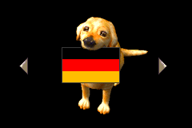

Meine Tierpension (Germany) (En,De)
EEPROM 64K
Cartridge Identity
- Game Code
BQTP(FamilyBQT)- Header Title
TIERPENSION- Maker / Revision
FR/ rev0- ROM Size
- 8.0 MiB (8,388,608 B)
- Save Media
EEPROM 64K- SHA-256
23802bee7c041f55b5bbbf69812b142c240bea7677881ff53dc51edc8ac3762f- Engine / SDK Group
comm-004(98 families)
Screenshots

ROM Assets, Compression & Audio
- BIOS Compression
- LZ77 (
0x10): 0 streams · RLE (0x30): 1 streams - ROM Pointer Tables
- 15 tables (0 pointing to validated compressed streams)
- SDK Backup Tags
EEPROM_V124
Hardware MMIO Subsystems
ppu_display0x8000ea8,0x80072dc,0x80078c0,0x800a41c
Regional Variants & Revisions (Family BQT)
- Lea - Passion Veterinaire (France) (En,Fr) (
BQTF, 8 MiB) - Mijn Dierenpension (Netherlands) (En,Nl) (
BQTX, 8 MiB)